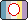
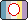
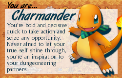

About the Webmaster!
Kian or Eddie!
y/o, he/she (+), White (Irish-Canadian)Disabled queer androgyne ambiam fairy cub
Furry, therian/holothere, PLURR
Taken by Ghost since 24/10/19


 



Who am I?
I'm Kian or Eddie! I don't have a name preference, so choose your favourite. I'm a gay-queer Autistic guy from Canada and I like creating all sorts of things as a form of self-expression, like this website! I'm currently not studying or in employment, but I'm always working towards my goal of having a part-time job one day. Until then, I spend much of my time indulging in my creative outlets, watching my favourite media, and doing what I can to keep busy. I like to play and draw.
A little more about me
I see myself as being someone who has a lot of passion in his heart, which is both a good and bad thing. Good in the fact that it makes me very loving, compassionate, dependable, driven, and nurturing, but bad in the fact that I am rather short-tempered and reactive, especially when myself or my loved ones are in danger. Regardless, I love very deeply, and I do everything I can to help my friends when they're going through a hard time. I'm also one to take my responsibilities very seriously, and while I always strive to go above and beyond, I also tend to downplay my accomplishments. Due in part to my Autism, change is something I approach with reluctance—not due to a belief that change isn't necessary, but mainly due to the sense of security and control I feel from knowing what to expect.
I don't consider myself either an introvert or extrovert, as I find myself sitting in the middle and shifting one way or another depending on the circumstances. As an Autistic guy, social situations can also be a source of confusion and distress, and many times my desire to interact with others will far exceed my social capacity. That being said, I feel I'm at my best when I'm around people I'm truly comfortable with, and often gain a lot of energy from my loved ones.
I like to make things!
I've always been one to create, ever since I learned how to pick up a pencil! 2D illustration is my mainstay, but I also dabble in other artforms like fursuit building, coding (like this site!), photography, and just recently, 3D modeling! I have an extensive history of mediums that I've at least dipped my toes into, and I'm frequently trying out new things with my art. If you want to check out my work, please visit tri4ge.icu.
I like the internet!
My history on the 'net is expansive, having been introduced to the computer at just 3 years old, and finding out about the websites Club Penguin and Webkinz at around 6 years old. As soon as I found out about the magic of the internet, it became solidified as an important part of my life, for better and for worse. Thanks to having this tool readily available to me, I was able to discover so much about myself and find communities with people who I would consider to be close friends of mine! Of course, my time on the Internet hasn't always been sunshine and rainbows, but that goes without saying, and I prefer to focus on how the Internet has helped me become the person I am today.
Outside of that, I'd pick up some coding knowledge here and there over the years, and would attempt a few of my own web dev projects several times since the release of Neocities. Of course, none of my stuff was really that good, but coding was something I always came back to as something I really enjoyed learning about (even through all of the frustration it causes.) My first pieces of coding knowledge would come from sites like DeviantArt and Tumblr, and eventually to that of Toyhouse and ArtFight.
I'm disabled!
I consider this to be a very important and all-encompassing part of myself and my life, as I am multiply disabled both by birth and by acquistion. My conditions affect my every waking moment, and are unavoidable when you get to know me.
Specifically, I have Hypermobile Ehlers Danlos, Fibromyalgia, Myalgic Encephalomyelitis (or Chronic Fatigue Syndrome, which I personally hate), migraine with aura, and Dysautonomia, amongst other commorbidities. I was diagnosed with all of these in the past 7 years, and finding the right treatment since then has been difficult. Unlucky for me, I happen to have all of the conditions where nobody knows what the fuck is actually happening in the body for them to occur, so treatment is based on symptom management rather than addressing the root cause. Personally, I think that Fibromyalgia has a high possibility of being autoimmune, and that mitochondrial dysfunction plays a major role in how debilitating ME is, but that's just what I think.
With my case unfortunately being very treatment-resistant, I use medical cannabis for the majority of my symptom management. Because of this, I am a huge advocate for the complete legalization and decriminalization of cannabis for all uses, including medical, recreational, and spiritual. I am also partaking in an experimental treatment with low-dose Naltrexone, and as a result, believe in the right for patients to choose their own forms of treatments, including experimental ones.
Even with my current treatment plan, I still remain moderately disabled by my conditions, with over 50% of my functioning having been lost, so there's a lot I am unable to do and miss out on. Contrary to popular belief, however, my life isn't exclusively about how miserable I am, and I still manage to find ways to still enjoy life, even with my constant suffering!
I am also moderately Autistic and developmentally disabled with several learning disabilities (US-CA definition, I'm not intellectually disabled!), dyspraxia, and dyscalculia, which impact my every day life on a significant basis. Because of my Autism, I was also late to start speaking, and speech problems have continued throughout my entire life. Therefore, I sometimes use various forms of AAC in order to help me communicate! I have custom-made communication cards attached to my sunflower lanyard for short and generalized phrases, and I also use the apps TD Snap and Speech Assistant on my iPad as my choice of high-tech AAC!
I'm also psychologically disabled with various mental health conditions. I don't feel comfortable sharing too much about my mental health, but I struggle a lot with dissociation, anxiety, psychosis, mood disorders, and post-traumatic stress.
Why FaerieMachine?
FaerieMachine came out as an alias I made originally for a new Instagram page I made back in 2021 to post about my interest in toy robots at the time. The name kinda stuck for me in other places of the internet though, expanding to encapsulate the more personal and intimate side of my internet presence!
As for why I chose Faerie as part of the alias, I'm fae alterhuman, and I feel like the legend of fairies really fits with my personality and overall identity in a single word!
My interests
Special interests
I only have a few things that I'd consider to truly fit the definition of being a 'special interest,' since these are the things that I feel shape me as a human being! You can't separate my special interests from me, they're that important to my identity!
Furry culture & fursuits: My main fursona is Hyson the fairy vampire bat, who is also my fursuiting character! I've since gone to a few conventions (CanFURence '23 + '24 + '25', Furnal Equinox '25,) and I have future plans to attend even more!
Toy & plushie collecting: I've been collecting toys since 2004-ish, and I've had interests in many different brands over the years! Some of my favourite bands include: Sunlemon, Douglas Cuddle Toys, Jellycat, Prime Shiba, Save Our Space, Prime Shiba, Webkinz + Ganz, Palm Pals + Aurora World, Squishable, Magic Mixies, Mary Meyer, Amuse, Furby, Beanie Babies + Beanie Buddies
Listening to music: I don't know how to make music or play any instruments (although I'd love to learn one day,) but I do love listening to music, to the point where I feel like it's the window to my soul! I write more about this on my music page!
Roller coasters: I've collected over 50 credits to my name, with my home park being La Ronde (unfortunately,) and my favourite coasters being Leviathan at Canada's Wonderland and Iron Gwazi at Busch Gardens Tampa! If you're interested in getting into roller coasters but don't know where to start, I have a beginner's guide if you're interested!
General interests
Hobbies
- Toy collecting & archiving
- Medical research
- Visual arts
- Fursuit building
- HTML/CSS coding
- Smoking weed
- Making playlists
- Watching movies & shows
- Journalling
- Thrift shopping
- Making lists
- Writing
- Archiving media
- Tarot
Likes
- Partner & friends
- Rainbows
- Love
- Animals
- Linux
- Technology
- Horror media
- Food
- Trains & planes
- Kandi-making
- Mechanics
- Fashion
- Antiques
- Disasters & freak accidents
- Bootleg items
- Puzzle games
- Forensics
- Abandoned places
- Virtual pets
- Air raid sirens
- Emergency Alert Systems
- Maximalist design
- Organized chaos
- Kink and fetish
Dislikes
- Changes to my schedule
- Bright/flashing lights
- Busy places
- Tomatoes
- Social media culture
- Toxic positivity
- Winter
- DNI lists (Just block people)
- People who take astrology/typology seriously
- Landlords
- Right-wingers
- Liberals
- Bible-thumpers
- Sports
- Minimalism
- Phonies
- Being infantilized
- Demands/threats to my autonomy
- Fireworks
- The word "Schizoposting"
- Anti-Communists
- Cheaply-made plushies
Media interests
I have a variety of media-related interests that mean a lot to me. Hover over each image to see their name, and scroll horizontally to see all of them!
Movies
 Black Christmas
Black Christmas  Phantom Of The Paradise
Phantom Of The Paradise  Brain Damage
Brain Damage  Basket Case
Basket Case  Behind The Mask
Behind The Mask  Frankenhooker
Frankenhooker  Jennifer's Body
Jennifer's Body  Texas Chainsaw Massacre
Texas Chainsaw Massacre  Texas Chainsaw Massacre 2
Texas Chainsaw Massacre 2  The Exoricst
The Exoricst  Nope
Nope  An American Werewolf in London
An American Werewolf in London  Baby Driver
Baby Driver  Jackass
Jackass  Akira
Akira  Puss In Boots: The Last Wish
Puss In Boots: The Last Wish  Who Framed Roger Rabbit
Who Framed Roger Rabbit TV Shows
 Barry
Barry  Breaking Bad
Breaking Bad  Yellowjackets
Yellowjackets  Trailer Park Boys
Trailer Park Boys  Venture Bros
Venture Bros  Archer Tuca and Bertie
Archer Tuca and Bertie  Big City Greens
Big City Greens  The Owl House
The Owl House  Chowder
Chowder  My Little Pony: Friendship is Magic
My Little Pony: Friendship is Magic  Thomas The Tank Engine
Thomas The Tank Engine  Gabbys Dollhouse
Gabbys Dollhouse  Toopy & Binoo
Toopy & Binoo Games & game franchises
 Hotline Miami
Hotline Miami  Resident Evil
Resident Evil  Ratchet and Clank
Ratchet and Clank  Minecraft
Minecraft  Petz 4
Petz 4  Pokemon: Black & White
Pokemon: Black & White  Pokemon: HeartGold & SoulSilver
Pokemon: HeartGold & SoulSilver  Super Mario Sunshine
Super Mario Sunshine  Sonic The Hedgehog
Sonic The Hedgehog  Tomodachi Life
Tomodachi Life ARGS & Interactive Media
 Marble Hornets
Marble Hornets  MLAndersen0
MLAndersen0  This House Has People In It
This House Has People In It  Children of The Mirror
Children of The Mirror  Cry of Mann
Cry of Mann YouTube
- Red Letter Media
- Vinesauce & JabroniMike
- SmallAnt
- Scott The Woz
- Jerma985
- Defunctland
- Brutalmoose
- LA Beast
- Anti-Chef
- Drew Gooden
- Kurtis Conner
- Danny Gonzalez
- Jarvis Johnson
Fiction Themes
- Chronic disease & illness
- Mental illness
- Childhood trauma
- Loss of control
- Bodily autonomy
- Coming of age
- Alienation
- Oppression
- Tragedy
- Love
- Chosen family
- Surveillance
- Mortality & death
- Recovery
- Survival
- Corruption
- Repression
Favourites
Here's some of my other favourite things just for fun.
Animals
- Felidae
- Bats
- Red pandas
- Zebras
- Cows
- Bears
- Hedgehogs
- Ducks
- Penguins
- Ferrets
- Horses
- Bees
- Moths
- Foxes
- Dogs
- Otters
- Saber-toothed tigers
- Sheep
- Seahorses
Food
- Chicken alfredo
- Chicken wraps
- Pepperoni pizza
- Mac and cheese
- Strawberries
- Greek yogurt
- Butter chicken
- Sloppy Joe's
- Lasagna
- Chicken parmigiana
- Canneloni
- Quesadilla
- Tikka Masala
- Chicken flautas
- Avocado
- Caesar salad
- Fries & ranch
- Pomegranate
- Mango lassi
- Vegetarian miso
- Chicken & beef ramen
Items
- Teddy bear from my partner
- Various plushies from my collection
- Rollator walker
- Mobility scooter
- Sunflower lanyard
- Desktop PC & laptops
- iPad & Apple Pencil
- Vintage Singer sewing machine
- Iron Gwazi coaster cutout
- Signed Serj Tankian Elect The Dead vinyl
- Weather Radio
- Electronic dab rig
- CRT TV & VHS player
- DVD player
Aesthetics
- Medical themes & hospitals
- Rainbows & bright colours
- 80's, 90's, 2000's culture
- Old internet
- Childhood nostalgia
- Vintage & antique items
- Nature
- Amusement parks & carnivals
- Candy & sweets
- Arcades
- Kitsch
- Psychedelia & surrealism
- Frutiger Aero & Metro
- Halloween & Valentine's
- Sparklefurs & amateur artwork
Other favourites
- Colours: Salmon pink, dandelion yellow, mantis green
- Scents: Watermelon, vanilla, ocean, citrus fruits, coconut, gasoline (yes, really)
- Holiday: Halloween & Valnetine's
- Season: Spring & autumn
- Weather: Sunny & mild
- Time of day: Dusk
- Holiday: Halloween & Valnetine's
- Cat breeds: Moggies, Siamese, & LaPerm
- Dog breeds: Newfoundland & St. Bernard
- Dinosaur: Stegosaurus
- Ponies: Pinkie Pie & Applejack
- Playground choice: Swingset
Favourite Pokemon


Quizzes
#00BFFF |
Your dominant hues are cyan and blue. You like people and enjoy making friends. You're conservative and like to make sure things make sense before you step into them, especially in relationships. You are curious but respected for your opinions by people who you sometimes wouldn't even suspect. Your saturation level is very high - you are all about getting things done. The world may think you work too hard but you have a lot to show for it, and it keeps you going. You shouldn't be afraid to lead people, because if you're doing it, it'll be done right. Your outlook on life is very bright. You are sunny and optimistic about life and others find it very encouraging, but remember to tone it down if you sense irritation. |
|
Hello My name is |
| Eddie! |
| I am [a] |
| adorant, androgyne, angel, autistic, bear lover, boy in a skirt, boy lover, commie, cripple, cunt, cub, Dr., dissociative, drama queen, eccentric, effeminate, faggot, fairy, feminine, flamer, flappy puppy, fluffy, friend of Dorothy, furry, gay, girly-man, hairy, homosexual, kitty, LGBT, leather, lover, masculine, oblivious, otherkin, PLUR, pansy, passionate, pro-kink, same gender loving, sensitive, sick, sissyboy, survivor, whatever. |
| Who are you? |


See what Care Bear you are.


What Neopet Are You?
Hosted By theOtaku.com: Anime

What Sonic Character Are You?
Hosted By theOtaku.com: Anime



Which Jewelpet Are You?
Hosted By theOtaku.com: Anime

Which Hatsune Miku Nendoroid Model Are You?
Hosted By theOtaku.com: Anime

You're a sensitive, methodical person who is slow to warm up to others. You like to spend a lot of time alone and prefer having a select few friends.

What Sonic-X Character Are You?
Hosted By theOtaku.com: Anime